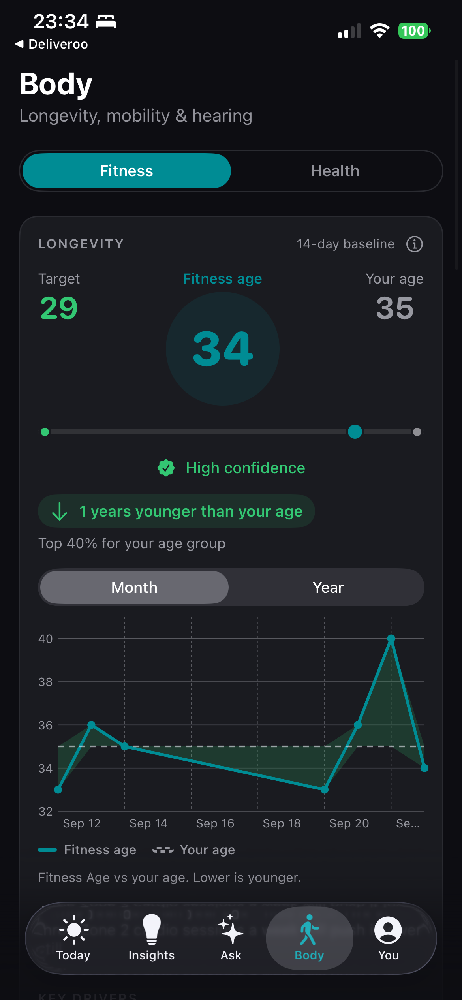
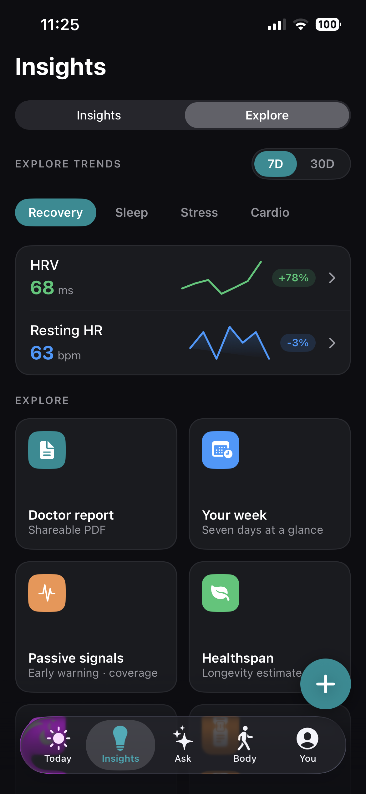
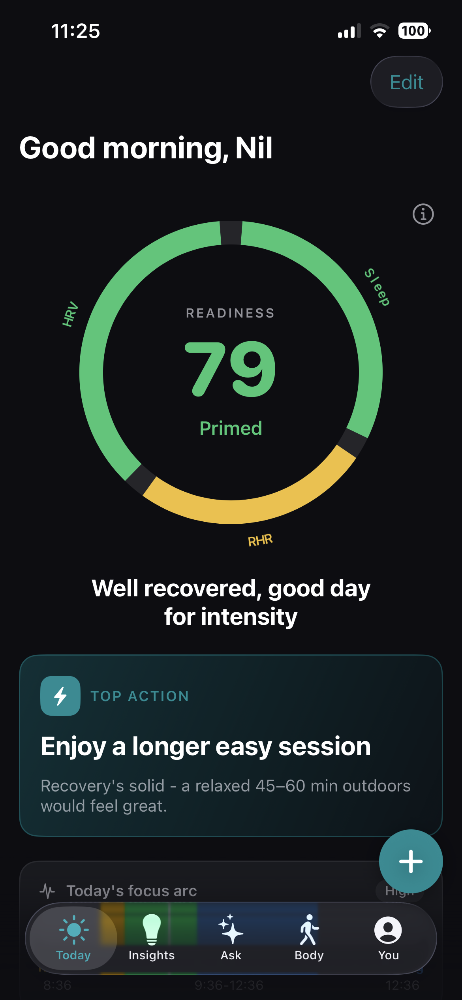
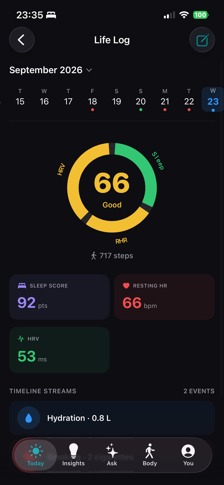
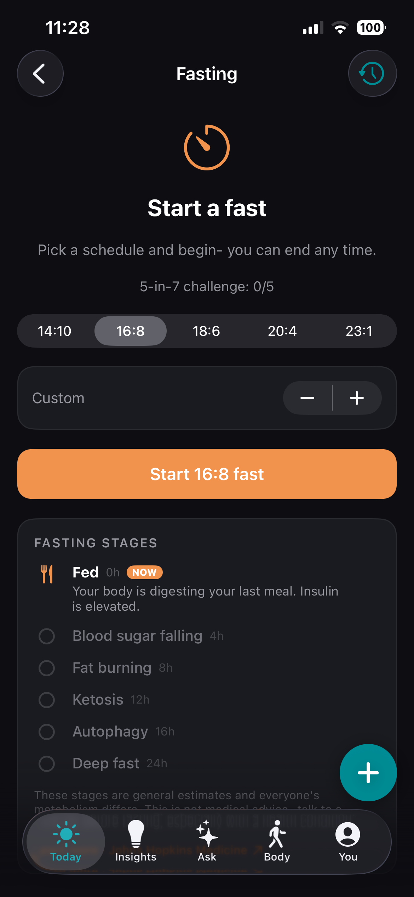
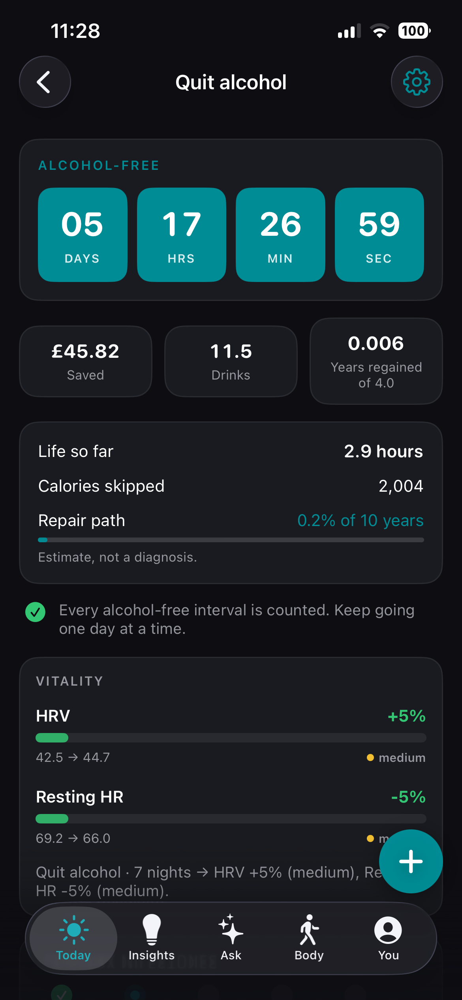

Free sleep tracking
Nights stay on your device.
Duration, stages and a sleep score from Apple Health. Optional snore tracking if you start a session. Clips never leave the phone.
An on-device AI health advisor that answers from your Apple Health data, plus free sleep tracking, free snore tracking, an apnea-risk screener, alcohol tracker, water intake tracker, cigarette log, quit smoking, life journal, fitness age and body weight. The AI runs on your device. Nothing is sent to a server. No account. No required logging. No backend.
Made in India ♥ · Private by design



Start free: sleep tracking, snore tracking, water intake, alcohol, cigarettes, a life journal, fitness age and weight from Apple Health. Ask an on-device AI health coach about your own nights and HRV. Add quit smoking, quit alcohol, fasting and an apnea-risk screener when you want them. Logging is optional. Core scores stay passive. The AI never leaves your phone.
A morning readiness score from HRV, sleep and resting heart rate, with one clear thing to do today.
Fitness age versus calendar age, body weight from Apple Health, mobility, hearing exposure and longevity trends from your own baselines.
Personal patterns with evidence: how alcohol, caffeine, cigarettes or a late night change your HRV and sleep, plus weekly reports and streaks.
A private AI health advisor and AI wellness coach. Ask about sleep, readiness, HRV or habits. Apple on-device models run on your device. Not a cloud chatbot. Health data is not uploaded for AI.
A water intake tracker with a personalised hydration goal, one-tap glasses, widgets and Apple Watch. Gentle reminders, not a nag.
Free sleep tracking from Apple Health: duration, stages, efficiency and a sleep score. Overnight, on-device, no extra wearable required if Health already has nights.
Free snore tracking during a sleep session you start. Loudness is measured on-device. Snore clips stay on your phone and are never uploaded.
An apnea-risk screener from snoring intensity, Watch breathing disturbances and overnight SpO2. A wellness signal, not a diagnosis.
Optional schedule and dose logging with adherence rings and a calendar. Never required, and never shared off your device.
A private life journal for mood, notes and a calendar of how you felt. Stored only on your phone. Face ID can lock it.
An alcohol tracker for drinks, weekly limits, quit alcohol timers and how drinking shows up in sleep and HRV. Optional. Never required.
A cigarette tracker and quit smoking flow, plus vape logs if you use them. See slips next to recovery, and keep the streak on this device.
Optional intermittent fasting (16:8 and more) with stages on your phone. End any time. Not a diet prescription.
Log coffee and tea, see it against sleep and stress. Writes to Apple Health only if you turn that on.
Clean, glanceable, and honest about your data.



Most AI health apps send prompts to a cloud. Vityss Ask is an on-device AI health advisor and AI wellness coach. It uses Apple Foundation Models on your device, grounded in your Apple Health and logs. No account for AI. No prompt history on our servers. We have no servers for your health. Unlimited Ask conversations are part of Vityss Pro. Wellness insights only, not medical advice.
Vityss reads Apple Health read-only and computes your scores on your device and Apple Watch. Your health data, audio and location never leave your device. The only thing sent off-device is optional, anonymised crash and usage diagnostics. Never your health data, name, scores, audio or location.
Vityss offers wellness insights, not medical advice. Its scores are not a diagnosis and should not be treated as final. Always consult a doctor about your health.
Daily Brief, last night's sleep and optional logging stay free. Vityss Pro unlocks the deep end. Price is shown in your App Store currency before you pay.
The live listing is Vityss. Your body in one place. An Apple Watch unlocks the full Daily Brief. Phone-only still works for logging, journal and many insights.
https://apps.apple.com/gb/app/vityss-your-body-in-one-place/id6803214165